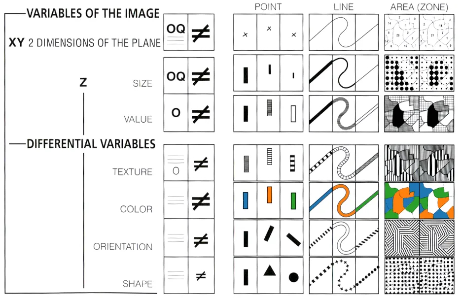

import altair as alt
from vega_datasets import data as vega_dataVisualization (Marks and Encoding)
Global Health Data
Introducing global health data
We will be visualizing global health and population data for a number of countries, over the time period of 1955 to 2005.
The data was collected by the Gapminder Foundation and shared in Hans Rosling’s fantastic TED talk.
If you haven’t seen the talk, we encourage you to watch it first!
Roadmap: load data and review first five rows
Load data
Let’s first load the dataset from the vega-datasets collection into a Pandas data frame.
data = vega_data.gapminder()data.shape(682, 6)head() + summary
data.head(5)| year | country | cluster | pop | life_expect | fertility | |
|---|---|---|---|---|---|---|
| 0 | 1955 | Afghanistan | 0 | 7971931 | 43.88 | 7.42 |
| 1 | 1960 | Afghanistan | 0 | 8622466 | 45.03 | 7.38 |
| 2 | 1965 | Afghanistan | 0 | 9565147 | 46.13 | 7.35 |
| 3 | 1970 | Afghanistan | 0 | 10752971 | 47.08 | 7.40 |
| 4 | 1975 | Afghanistan | 0 | 12157386 | 47.55 | 7.54 |
For each country and year (in 5-year intervals), we have
- fertility in terms of the number of children per woman (
fertility) - life expectancy in years (
life_expect) - total population (
pop) - mysterious
cluster– what might this represent? We’ll try and solve this mystery as we visualize the data!
Data types
Data types: roadmap
Pandas data frames come with types. When loading data not from pandas, explicitly name:
'N'indicates a nominal type (unordered, categorical data),'O'indicates an ordinal type (rank-ordered data),'Q'indicates a quantitative type (numerical data with meaningful magnitudes), and'T'indicates a temporal type (date/time data)
Nominal (N)
- Nominal data (also called categorical data) consist of category names.
- Ask is value A the same or different than value B? (A = B), supporting statements like “A is equal to B” or “A is not equal to B”.
- In the dataset above, the
countryfield isNominal.
- In the dataset above, the
- When visualizing nominal data we should readily be able to see if values are the same or different: position, color hue (blue, red, green), and shape can help.
- Remark: using a
sizechannel to encode nominal data might mislead us, suggesting rank-order or magnitude differences among values that do not exist!
- Remark: using a
Ordinal (O)
- Ordinal data consist of values that have a specific ordering.
- Ask: does value A come before or after value B? (A < B), supporting statements like “A is less than B” or “A is greater than B”.
- In the dataset above, we can treat the
yearfield asOrdinal.
- In the dataset above, we can treat the
- When visualizing ordinal data, we should perceive a sense of rank-order. Position, size, or color value (brightness) might be appropriate.
- Remark: color hue (which is not perceptually ordered) would be less appropriate.
Quantitative (Q)
- With quantitative data we can measure numerical differences among values. There are multiple sub-types of quantitative data:
- With interval data ask: what is the distance to value A from value B? (A - B), supporting statements such as “A is 12 units away from B”.
- With ratio data can also ask:
- how many are there of value A? supporting statements such as “how many babies per parent?”
- value A is what proportion of value B? (A / B), supporting statements such as “A is 10% of B” or “B is 7 times larger than A”.
- In the dataset above,
yearis a quantitative interval field (depending on whose history of the world you prefer, there are many choices for the year “zero”), whereasfertilityandlife_expectare quantitative ratio fields (zero is meaningful for calculating proportions).
- Vega-Lite represents quantitative data, but does not make a distinction between interval and ratio types.
- Quantitative values can be visualized using position, size, or color value, among other channels.
Quantitative (Q), continued
- recap
- with interval data ask: what is the distance to value A from value B? (A - B)
- With ratio data can also ask:
- how many are there of value A?
- value A is what proportion of value B? (A / B),
- Textbook: “An axis with a zero baseline is essential for proportional comparisons of ratio values, but can be safely omitted for interval comparisons.”
- Discussion question – Why is it so important to include zeros for ratio data? Can you give a counter-example where omitting zeros on the plot would lead the reader to misleading conclusions?
Example of a potentially misleading plot by omitting zeros
Temporal (T)
- Temporal values measure time points or intervals. This type is a special case of quantitative values (timestamps) with rich semantics and conventions (i.e., the Gregorian calendar).
- Example temporal values include date strings such as
“2019-01-04”and“Jan 04 2019”, as well as standardized date-times such as the ISO date-time format:“2019-01-04T17:50:35.643Z”. - There are no temporal values in our global development dataset above, as the
yearfield is simply encoded as an integer.
Discussion question I
What are examples of variables that are
NominalOrdinalQuantitative
Let’s try to come up with at least three examples of each. For each example, state the comparison in a sentence.
Discussion question II
Suppose we have a dataset of ages (10 years old, 20 years old, 10 years old, 30 years old). What would it mean for these data to be
NominalOrdinalQuantitative
What comparisons are feasible with each data type?
Revisit plot from beginning of prior lecture
seattle = vega_data.seattle_weather()
alt.Chart(seattle).mark_bar().encode(
x = 'month(date):O',
y = 'average(precipitation):Q'
)In-class exercises
What happens when…
- Make
precipitationordinal - Revert. then make
datetemporal. There’s a consequential but subtle change relative to the original plot. What is it?
In-class exercises: solution precipitation ordinal
seattle = vega_data.seattle_weather()
alt.Chart(seattle).mark_bar().encode(
x = 'month(date):O',
y = 'average(precipitation):O'
)In-class exercises: solution date temporal
seattle = vega_data.seattle_weather()
alt.Chart(seattle).mark_bar().encode(
x = 'month(date):T',
y = 'average(precipitation):Q'
)Answer:
- When
month(date)isOrdinal we had a bar graph with 12 categories. The label is in the middle of each bar. - When
month(date)isTemporal we had a bar graph which marks dates for the beginning of each month. The labels are at the tick marks. We have 13 labels because we also pick up an extra “Jan” at the end
data types: summary
A single data series can have multiple meanings depending on data type
'N'indicates a nominal type (unordered, categorical data),'O'indicates an ordinal type (rank-ordered data),'Q'indicates a quantitative type (numerical data with meaningful magnitudes), and'T'indicates a temporal type (date/time data)
Explicitly specify the data type so that Altair/Vega know how to interpret it. If you don’t specify a data type (as was the case in Lecture 1), Vega will guess. This can lead to undesired results!
Visual encoding
Visual encoding roadmap
- Seven types of visual encoding
- More on color
Seven ways of visual encoding I
Source: Jacques Bertin in Semiology of Graphics (1967), via source
Within the plane a mark can be at the top or the bottom, to the right or the left. The eye perceives two independent dimensions along X and Y, which are distinguished orthogonally. A variation in light energy produces a third dimension in Z, which is independent of X and Y…
Seven ways of visual encoding II
The eye is sensitive, along the Z dimension, to 6 independent visual variables, which can be superimposed on the planar figures:
- the size of the marks
- their value [brightness]
- texture
- color [hue]
- orientation
- shape.
They can represent differences (≠), similarities (≡), a quantified order (Q), or a nonquantified order (O), and can express groups, hierarchies, or vertical movements.
Seven ways of visual encoding in one image

Free advice: don’t try to use all seven ways of encoding information in a single plot. It will inevitably be overload.
More depth on color
Language note: by color, we mean both brightness (which Bertin calls “value”) and hue (which Bertin calls “color”)
Why choose color deliberately?
- Using any software’s default color palette is kind of like using comic sans font on a resume
- Choosing the “right” colors will make it easier for you to convey meaning
Color palettes and their use cases
Toggle back and forth to the schemes page:
step 1 Am I working with Nominal, unordered data or with ordered data (either Ordinal or Quantitative)?
If Nominal, unordered data, use categorical palettes. Otherwise, proceed.
step 2
| Palette type | Use case |
|---|---|
| Sequential Single-Hue | |
| Sequential Multi-Hue | Use for higher contrast, but harder to judge quantitative proximity |
| Diverging | Use if there is a midpoint (e.g. voting for redblue) |
| Cyclical | Use if circular (e.g. time of day, month) |
More advice on color choices
- Use colorbrewer2.org to choose your color palettes. Click through to site. Options include subsetting to colors that are
- colorblind safe
- black and white printer (aka photocopy) safe
- Harmonization
- Within reports You rarely produce a single plot in isolation. You usually produce several plots as part of a memo, a website, etc. Use consistent colors across plots.
- Across reports Many organizations have official palettes and plot templates. Good to ask if you are working for a big org if they have one.
Visual encoding: summary
- Bertin proposes seven different ways to encode visual information. His chart is a handy reference to what visual elements can encode different types of information.
- Color is one of the easiest ways to convey meaning. Choose your palette based on whether you want to convey unordered or ordered data, whether you have a midpoint, and whether your ordered series is cyclical
Encoding channels
Encoding channels: roadmap
We now are going to learn how to implement Bertin’s vision in Altair.
- x
- y
- size
- color
- opacity
- shape
- column
- row
X
data2000 = data.loc[data['year'] == 2000] #one year is more manageable
alt.Chart(data2000).mark_point().encode(
alt.X('fertility:Q')
)Y
alt.Chart(data2000).mark_point().encode(
alt.X('fertility:Q'),
alt.Y('cluster:O')
)In-class exercise: what happens if you swap the Q and the O types?
Do not require zero on axis range
zero_included = alt.Chart(data2000).mark_point().encode(
alt.X('fertility:Q'),
alt.Y('life_expect:Q')
)
zero_excluded = alt.Chart(data2000).mark_point().encode(
alt.X('fertility:Q', scale=alt.Scale(zero=False)),
alt.Y('life_expect:Q', scale=alt.Scale(zero=False))
)
zero_included | zero_excludedDiscussion question: which plot do you prefer (and why?)
Observations about whether to include zero
- If you include zero, there is a lot of wasted white space. The data are compressed into a small area. This is best if the message you want to send is that fertility varies by a factor of nearly 8 from the highest to lowest while life expectancy varies much less (from 80 to 50)
- If you exclude zero, it is much easier to see the negative relationship between life expectancy and fertility. This is best if that is the message you want to send.
size
alt.Chart(data2000).mark_point().encode(
alt.X('fertility:Q'),
alt.Y('life_expect:Q'),
alt.Size('pop:Q')
)add color and size with filled=True
alt.Chart(data2000).mark_point(filled=True).encode(
alt.X('fertility:Q'),
alt.Y('life_expect:Q'),
alt.Size('pop:Q', scale=alt.Scale(range=[0,1000])),
alt.Color('cluster:N')
)alt.Scale defines the scale of the legend, and is not in reference to anything in the data
opacity
alt.Chart(data2000).mark_point(filled=True).encode(
alt.X('fertility:Q'),
alt.Y('life_expect:Q'),
alt.Size('pop:Q', scale=alt.Scale(range=[0,1000])),
alt.Color('cluster:N'),
alt.OpacityValue(0.5)
)column
alt.Chart(data2000).mark_point(filled=True).encode(
alt.X('fertility:Q'),
alt.Y('life_expect:Q'),
alt.Size('pop:Q', scale=alt.Scale(range=[0,1000])),
alt.Color('cluster:N'),
alt.OpacityValue(0.5),
alt.Column('cluster:N')
)adjust aspect ratio, move pop legend, remove color legend
alt.Chart(data2000).mark_point(filled=True).encode(
alt.X('fertility:Q'),
alt.Y('life_expect:Q'),
alt.Size('pop:Q', scale=alt.Scale(range=[0,1000]),
legend=alt.Legend(orient='bottom', titleOrient='left')),
alt.Color('cluster:N', legend=None),
alt.OpacityValue(0.5),
alt.Column('cluster:N')
).properties(width=135, height=135)in-class exercise
The plot faceted by column doesn’t fit on the page. Redo it instead faceted by row.
Bonus: It still looks bad. What further change is needed?
in-class exercise: solution
- substitute
RowforColumn - delete
orient='bottom'
alt.Chart(data2000).mark_point(filled=True).encode(
alt.X('fertility:Q'),
alt.Y('life_expect:Q'),
alt.Size('pop:Q', scale=alt.Scale(range=[0,1000]),
legend=alt.Legend(titleOrient='left')),
alt.Color('cluster:N', legend=None),
alt.OpacityValue(0.5),
alt.Row('cluster:N')
).properties(width=135, height=135)Encoding channels: summary
alt.X: Horizontal (x-axis) position of the mark.alt.Y: Vertical (y-axis) position of the mark.alt.Size: Size of the mark. May correspond to area or length, depending on the mark type.alt.Color: Mark color, specified as a legal CSS color.alt.Opacity: Mark opacity, ranging from 0 (fully transparent) to 1 (fully opaque).alt.Shape: Plotting symbol shape forpointmarks.alt.Column: Facet the data into horizontally-aligned subplots.alt.Row: Facet the data into vertically-aligned subplots.
Graphical marks
Graphical marks: roadmap
Prior section used only mark_point(). Now will cover
mark_point()mark_circle()
mark_square()mark_tick()
mark_bar()mark_line()
mark_area()
Caveats:
- there are a ton of slides in this section.
- but each slide is simple. focus is on software.
mark_point(): add information using alt.Shape()
alt.Chart(data2000).mark_point().encode(
alt.X('fertility:Q'),
alt.Y('life_expect:Q', scale=alt.Scale(zero=False)),
alt.Shape('cluster:N')
)mark_point(): format points using arguments
alt.Chart(data2000).mark_point(filled=True, size=100).encode(
alt.X('fertility:Q'),
alt.Y('life_expect:Q', scale=alt.Scale(zero=False)),
alt.Shape('cluster:N')
)mark_circle() wrapper for mark_point(filled=True)
alt.Chart(data2000).mark_circle(size=100).encode(
alt.X('fertility:Q'),
alt.Y('life_expect:Q', scale=alt.Scale(zero=False)),
alt.Shape('cluster:N')
)mark_square()
alt.Chart(data2000).mark_square(size=100).encode(
alt.X('fertility:Q'),
alt.Y('life_expect:Q', scale=alt.Scale(zero=False)),
alt.Shape('cluster:N')
)mark_tick()
- Useful for comparing values along a single dimension with minimal overlap.
- A dot plot drawn with tick marks is sometimes referred to as a strip plot.
alt.Chart(data2000).mark_tick().encode(
alt.X('fertility:Q'),
alt.Y('cluster:N')
)mark_bar()
alt.Chart(data2000).mark_bar().encode(
alt.X('country:N'),
alt.Y('pop:Q')
)use alt.Color() for a stacked bar plot
alt.Chart(data2000).mark_bar().encode(
alt.X('cluster:N'),
alt.Y('pop:Q'),
alt.Color('country:N', legend=None)
)X2() to show intervals
alt.Chart(data2000).mark_bar().encode(
alt.X('min(life_expect):Q'),
alt.X2('max(life_expect):Q'),
alt.Y('cluster:N')
)mark_line()
data_4a = data.loc[data['cluster'] == 2] #one cluster is more manageable
alt.Chart(data_4a).mark_line().encode(
alt.X('year:O'),
alt.Y('fertility:Q'),
alt.Color('country:N')
).properties(
width=400
)how many lines? Tooltip instead of legend
textbook advocates for having a plot with many more lines, no legend, and instead using alt.Tooltip('country:N'). This is technologically feasible but a bad idea. (Discuss: why?)
alt.Chart(data).mark_line().encode(
alt.X('year:O'),
alt.Y('fertility:Q'),
alt.Color('country:N', legend=None),
alt.Tooltip('country:N')
).properties(
width=400
)mark_line() with cosmetic adjustments
alt.Chart(data_4a).mark_line(
strokeWidth=3,
opacity=0.5,
interpolate='monotone'
).encode(
alt.X('year:O'),
alt.Y('fertility:Q'),
alt.Color('country:N')
).properties(
width=400
)mark_line() with cosmetic adjustments
data_4a_2y = data_4a[data_4a['year'].isin([1955, 2005])]
alt.Chart(data_4a_2y).mark_line().encode(
alt.X('year:O'),
alt.Y('fertility:Q'),
alt.Color('country:N')
).properties(
width=400
)mark_area()
dataUS = data.loc[data['country'] == 'United States']
alt.Chart(dataUS).mark_area().encode(
alt.X('year:O'),
alt.Y('fertility:Q')
)mark_area() with interpolate='monotone'
alt.Chart(dataUS).mark_area(interpolate='monotone').encode(
alt.X('year:O'),
alt.Y('fertility:Q')
)mark_area() with stacking
dataNA = data[data['country'].isin(['United States', 'Mexico', 'Canada'])]
alt.Chart(dataNA).mark_area().encode(
alt.X('year:O'),
alt.Y('pop:Q'),
alt.Color('country:N')
)mark_area() with no stacking and opacity
alt.Chart(dataNA).mark_area(opacity=0.5).encode(
alt.X('year:O'),
alt.Y('pop:Q', stack=None),
alt.Color('country:N')
)mark_area() to show range
alt.Chart(dataNA).mark_area().encode(
alt.X('year:O'),
alt.Y('min(fertility):Q'),
alt.Y2('max(fertility):Q')
).properties(
width={"step": 40}
)We can see a larger range of values in 1995, from just under 4 to just under 7. By 2005, both the overall fertility values and the variability have declined, centered around 2 children per familty.
Syntax: mark_area() swap axes
alt.Chart(dataNA).mark_area().encode(
alt.Y('year:O'),
alt.X('min(fertility):Q'),
alt.X2('max(fertility):Q')
).properties(
width={"step": 40}
)Graphical marks: summary
Covered today
mark_point()- Scatter plot points with configurable shapes.mark_circle()- Scatter plot points as filled circles.mark_square()- Scatter plot points as filled squares.mark_tick()- Vertical or horizontal tick marks.
mark_bar()- Rectangular bars.mark_line()- Connected line segments.mark_area()- Filled areas defined by a top-line and a baseline.
Not covered in lecture
mark_rect()- Filled rectangles, useful for heatmaps.mark_rule()- Vertical or horizontal lines spanning the axis.mark_text()- Scatter plot points represented by text.
For a complete list, and links to examples, see the Altair marks documentation.